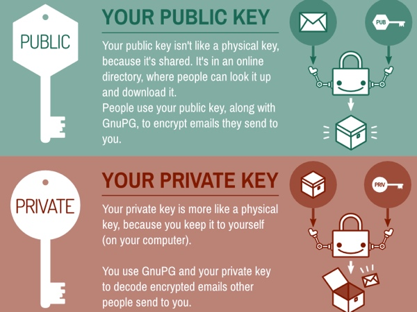

Privacy Resources-Secure Commmunication
Communication is one of the major features of technology. It allows us to communicate with people all over the world. However, these communications can be intercepted by just about anyone who has the know how unless you make sure to secure the communications. This can be anyone from the government to friends, to even the service that hosts the communications. Here are some suggestions to make your communications more private so you can communicate in peace.
- As mentioned in the social media section, make sure you are communicating with someone you trust. Avoid talking with random people whom you don't necessarily trust. Also, practice good communcation habits. Remember, nothing is completely secret. Someone could screenshot the conversation and share it, or just tell someone else about what you commmunicated about. Privacy between two people is only as good as the two different parties are.
- One solution to potential reading of messages is E2EE (End-to-End-Encryption). E2EE is a process in which all messages between the people in the conversation are scrambled such that outside people can't read it. This is done by generating two random pieces of information for each person. The message is mixed through these pieces of information so only the person who was intended to read it can. The Electronic Frontier Foundation has some more information on E2EE as well. Several apps for mobile devices already allow for such communication, such as Signal, Confide, Google Allo, Telegram, and WhatsApp (Be careful with this one however, as its security has recently been put into doubt. They have the ability to change the key to whatever they please without notifying you, so be careful if you choose this one!) Messenger also has E2EE as well. Edward Snowden, as well as I, prefer Signal as it is one that has been independently audited and is a well-trusted service.
- Additionally, sometimes you may have to communicate through insecure channels. In these situations, alternative forms of encryption may be helpful. For example, PGP (Pretty Good Privacy). This uses the style of key exchange mentioned above, but can be applied to text to verify the sender and to encrypt text without using a built-in solution. Several apps on both Android and iOS have features for PGP, but the most common pgp software on computers is GPG, an open source alternative using the same standard as the commercial PGP.
- When working with emails, PGP does not implement as easily. S/MIME is easier. It allows you to encrypt emails between two different people, using key exchanges like E2EE and PGP. You can get a free S/MIME certificate from Comodo.
